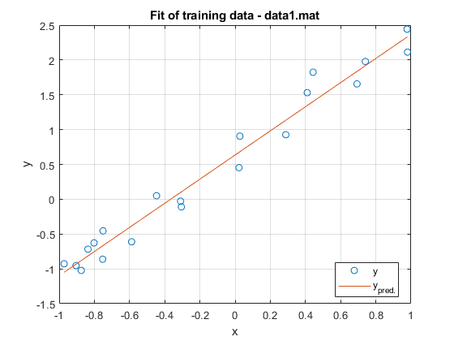
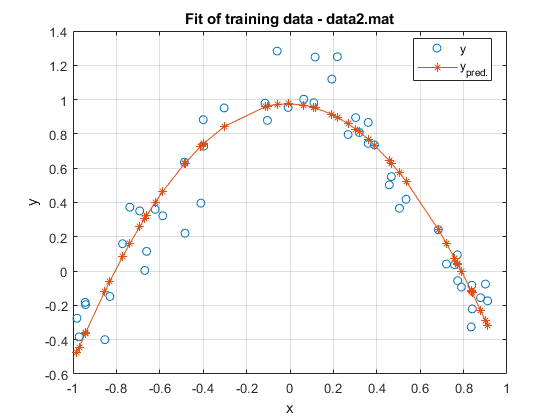
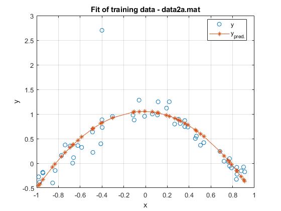
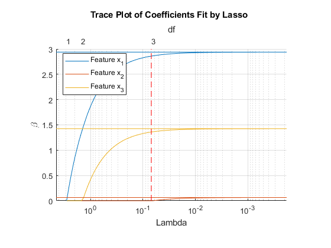
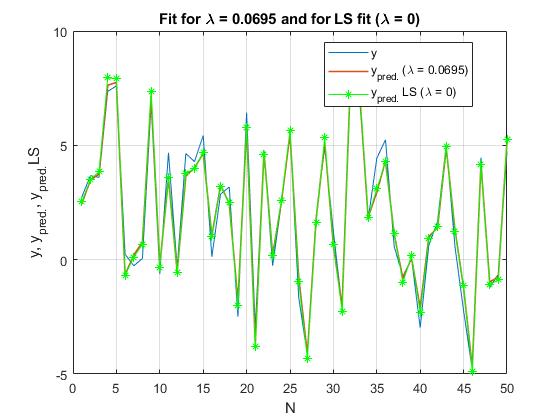

Machine Learning 1st Lab Assignment - Linear Regression
Francisco Melo - 84053
Rodrigo Rego - 89213
Group Number - 1
Shift - Sexta 14h
12/10/2018
Contents
1. Least Squares Fitting
1.3
Least Squares Fitting. P=1 to fit a straight line
close all; clear all; load data1.mat; %polynomial order p=1; %polynomial fit of the variables x and y [beta,ypred]=polynomialFit(x,y,p); %plot of fit and training data figure; plot(x,y,'o',x,ypred); title('Fit of training data - data1.mat'); legend('y','y_{pred.}','Location', 'Best'); xlabel('x'); ylabel('y'); grid on; %Calculation of the sum of squared errors erro=y-ypred; SSE=erro'*erro; clc; fprintf('Q1.3) SSE = %f\n', SSE);
Q1.3) SSE = 0.743335
1.4
Least Squares Fitting. P=2 to fit a parabola
close all; clear all; load data2.mat; %Polynomial order p=2; %polynomial fit of the variables x and y [beta,ypred]=polynomialFit(x,y,p); %Sort predicted points: order points by X coordinate - only for plotting %purposes sorted=(sortrows([x,ypred],1))'; x_sorted=sorted(1,:); ypred_sorted=sorted(2,:); %plot of fit and training data figure; plot(x,y,'o',x_sorted,ypred_sorted,'-*'); title('Fit of training data - data2.mat'); legend('y', 'y_{pred.}', 'Location', 'Best'); xlabel('x'); ylabel('y'); grid on; %Calculation of the sum of squared errors erro=y-ypred; SSE=erro'*erro; fprintf('\nQ1.4) SSE = %f\n', SSE);
Q1.4) SSE = 1.341594
1.5
Least Squares Fitting. P=2 to fit a parabola with outlier point
close all; clear all; load data2a.mat; %Polynomial order p=2; %polynomial fit of the variables x and y [beta,ypred]=polynomialFit(x,y,p); %Sort predicted points: order points by X coordinate - only for plotting %purposes sorted=(sortrows([x,ypred],1))'; x_sorted=sorted(1,:); ypred_sorted=sorted(2,:); %plot of fit and training data figure; plot(x,y,'o',x_sorted,ypred_sorted,'-*'); title('Fit of training data - data2a.mat'); legend('y','y_{pred.}','Location', 'Best'); xlabel('x'); ylabel('y'); grid on; %Calculation of the sum of squared errors erro=y-ypred; SSE=erro'*erro; fprintf('\nQ1.5) SSE = %f\n', SSE);
Q1.5) SSE = 5.024873
2. Regularization
2.2/2.4
Lasso Regression
close all; clear all; load data3.mat; %Lasso calculation and plot [B,FitInfo] = lasso(X,Y); lassoPlot(B,FitInfo,'PlotType','Lambda','XScale','log'); ylabel('\beta'); hold on; grid on; %plot LS coefficients(lambda=0) for comparsion refline(0,B(:,1)); %lambda that removes feature 2 (beta2=0) - from visual inspection of the %indexes in the vector of degrees of freedom obtained in FitInfo (when it %transitions from 3 to 2 df) lambda=FitInfo.Lambda(60); %plot vertical line for lambda in index 60 (when feature 2 shrinks to 0) line([lambda lambda],[0,3],'Color','red','LineStyle','--'); legend(sprintf('Feature x_{1}'),sprintf('Feature x_{2}'),sprintf('Feature x_{3}'),'location','best'); %Calculation of the prediction(training data) using the coefficients that %eliminate feature 2 [B, FitInfo] = lasso(X, Y, 'lambda', 0.0695); B = [FitInfo.Intercept; B]; sz = size(X); X_lasso = [ones(sz(1), 1) X]; ypred=X_lasso*B; %%Calculation of the SSE erro=Y-ypred; SSE = erro'*erro; %For LS FIT (lambda=0) [beta, FitInfo] = lasso(X, Y, 'lambda', 0); beta = [FitInfo.Intercept; beta]; sz = size(X); X_ls = [ones(sz(1), 1) X]; ypred_ls=X_ls*beta; %%Calculation of the SSE (LS estimation) erro_ls=Y-ypred_ls; SSE_ls=erro_ls'*erro_ls; %auxiliary array to plot y,ypred and ypred with LS (x axis) N=linspace(1,50,50); %plot of y, the fit obtained for that value of lambda and the obtained %using LS fit figure; plot(N,Y); hold on; plot(N, ypred, 'linewidth', 1.2); hold on; plot(N, ypred_ls, '-*', 'color', 'green'); grid on; legend('y','y_{pred.} (\lambda = 0.0695)','y_{pred.} LS (\lambda = 0)','location','best'); xlabel('N'); ylabel('y, y_{pred.}, y_{pred.}LS') title('Fit for \lambda = 0.0695 and for LS fit (\lambda = 0)'); fprintf('\nQ2.4) SSE (lambda = 0) = %f\n SSE (lambda = 0.0695) = %f\n', SSE_ls, SSE);
Q2.4) SSE (lambda = 0) = 14.982010
SSE (lambda = 0.0695) = 15.719205
 